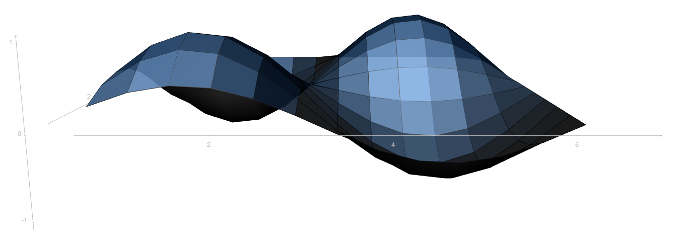
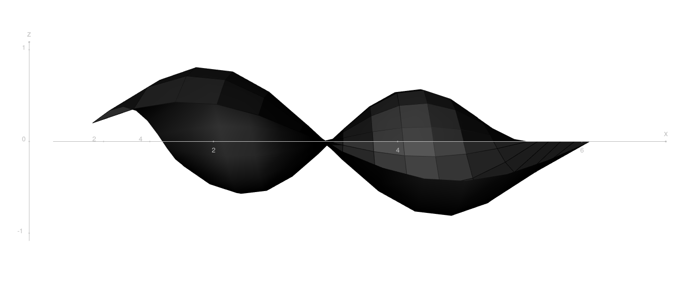
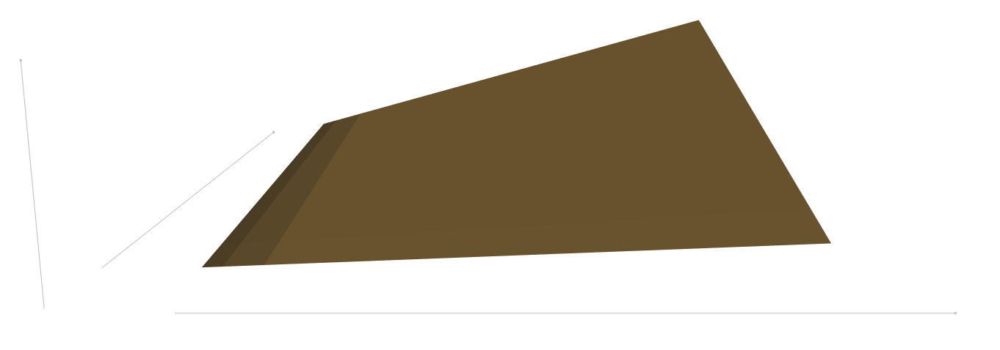
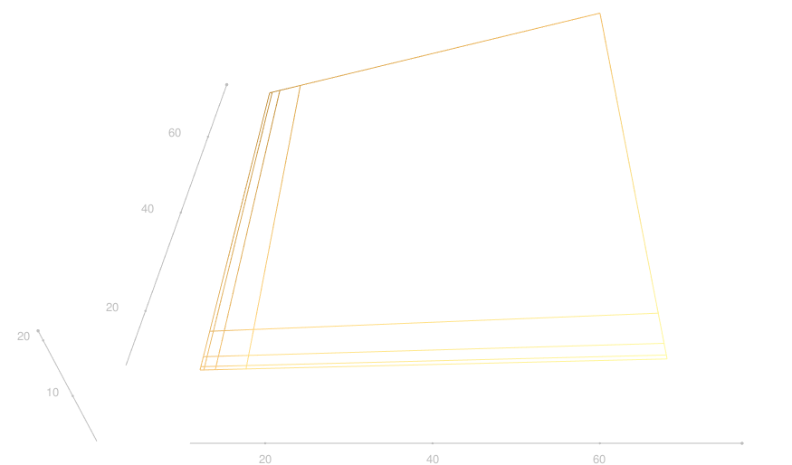

The kh3d package
kh3d.RmdAbout the package:
The kh3d package is a wrapper to plot 3d surfaces using the R package rgl that also depends on the tidyverse.
The core of the code was copied from sthda and than modified.
Currently this is a one function package, providing the funtion kh3_plot() which will takes a 3-column tibble (with the columns x,y & z) and plots the according 3d surface.
library(kh3d)
n_steps <- 13
wave <- tibble(x = 2*pi*(1:n_steps)/n_steps,
y = x) %>%
purrr::cross_df() %>%
mutate( z = sin(x)*sin(y))
wave## # A tibble: 169 x 3
## x y z
## <dbl> <dbl> <dbl>
## 1 0.483 0.483 0.216
## 2 0.967 0.483 0.382
## 3 1.45 0.483 0.461
## 4 1.93 0.483 0.435
## 5 2.42 0.483 0.308
## 6 2.90 0.483 0.111
## 7 3.38 0.483 -0.111
## 8 3.87 0.483 -0.308
## 9 4.35 0.483 -0.435
## 10 4.83 0.483 -0.461
## # … with 159 more rowsThe parameter aspect defines the aspect rario of the axes x,y & z.

Further parameters define the surfcae color, the axis labels, the surface shininess and the view angle. (Many of those parameters are original rgl parameters that will be passed on to rgl::surface3d().)
wave %>%
kh3_plot(.,
color = rgb(.1,.1,.1),
xlab = 'x',
ylab = 'y',
zlab = 'z',
aspect = c(1,1,1),
shininess = 4,
phi = -90)
The are three different style[s] (surface, lines & points). This parameter switches the surface apparence.

It is possible to omit the axis ticks and the lines drawn onto the surface by toggeling show_ticks and line_overlay to FALSE.
board <- tibble(x = rep(c(1,1.05,1.2,1.6,7),5)*10,
y = rep(c(1,1.05,1.2,1.6,7),each = 5)*10,
z = x*y/250)
board %>%
kh3_plot(., color = kh_clr[2],
show_ticks = FALSE,
line_overlay = FALSE,
aspect = c(1,1,1),
style = 'surface',
shininess = 4)
For completenes, here is an example of the line plot-type.
board %>%
kh3_plot(., color = kh_clr[2],
aspect = c(1,1,1),
style = 'lines',
shininess = 4,phi = -50)